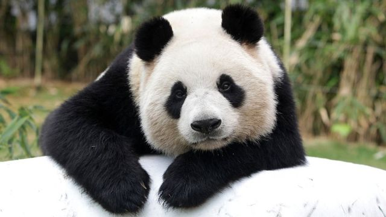

Pandas
Sedentários, mas nem tanto. Apesar da vida calma e tranquila que levam, na qual precisam se preocupar apenas em comer e dormir, eles possuem grandes habilidades para escalar e nadar. Os pandas conseguem subir até quase 4 mil metros nas montanhas atrás de comida.
